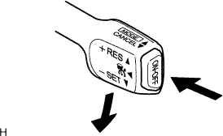
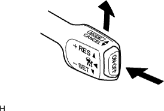
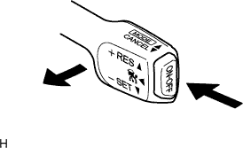

DYNAMIC RADAR CRUISE CONTROL SYSTEM > ROAD TEST |
| INSPECT SET SWITCH |
|  |
Turn the cruise control switch on.
Check that the cruise control indicator light in the combination meter assembly illuminates.
Drive the vehicle at a desired speed (between 50 km/h and 170 km/h [30 mph and 105 mph]).
Push the cruise control switch to -SET.
Check that the cruise control SET indicator light in the combination meter assembly illuminates.
After releasing the switch, check that the vehicle cruises at the desired speed.
| INSPECT "+" SWITCH |
|  |
Turn the cruise control switch on.
Drive the vehicle at a desired speed (between 50 km/h and 170 km/h [30 mph and 105 mph]).
Push the cruise control switch to -SET.
Check that vehicle speed increases while the cruise control switch is pushed to +RES, and that the vehicle cruises at the set speed when released.
Constant speed control mode:
Momentarily push the cruise control switch upward to +RES and immediately release it. Check that the vehicle speed increases by approximately 1.6 km/h (1 mph) (tap-up function).
Vehicle-to-vehicle distance control mode:
Momentarily push the cruise control switch upward to +RES and immediately release it. Check that the vehicle speed increases by approximately 1 km/h or 1 mph (tap-up function).
| INSPECT "-" SWITCH |
Turn the cruise control switch on.
Drive the vehicle at a desired speed (between 50 km/h and 170 km/h [30 mph and 105 mph]).
Push the cruise control switch to -SET.
Check that vehicle speed decreases while the cruise control switch is pressed down to -SET and that the vehicle cruises at the set speed when the cruise control switch is released.
Constant speed control mode:
Momentarily push the cruise control switch downward to -SET and immediately release it. Check that the vehicle speed decreases by approximately 1.6 km/h (1 mph) (tap-down function).
Vehicle-to-vehicle distance control mode:
Momentarily push the cruise control switch downward to -SET and immediately release it. Check that the vehicle speed decreases by approximately 1 km/h or 1 mph (tap-down function).
| INSPECT CANCEL FUNCTION (CANCEL SWITCH) |
|  |
Turn the cruise control switch on.
Drive the vehicle at a desired speed (between 50 km/h and 170 km/h [30 mph and 105 mph]).
Push the cruise control switch to -SET.
When performing one of the following, check that the cruise control system is canceled and that the normal driving mode is set:
| INSPECT RES (RESUME) SWITCH |
Turn the cruise control switch on.
Drive the vehicle at a desired speed (between 50 km/h and 170 km/h [30 mph and 105 mph]).
Push the cruise control switch to -SET.
Cancel the cruise control system by performing one of the following:
After the cruise control switch is pressed to +RES at a driving speed of more than 40 km/h (25 mph), check that the vehicle restores the speed set before cancellation.